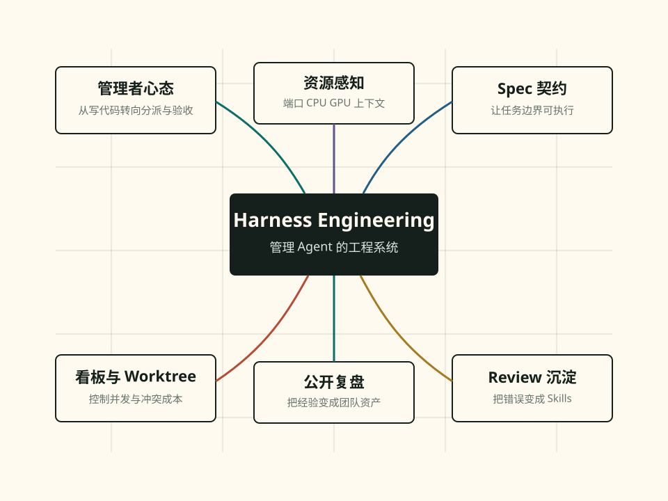

Agent 不是副驾，是需要管理的新成员
模型能力已经足够可用，瓶颈转向上下文构建、任务分派、验收标准和工程治理。开发者角色从亲自写代码，变成技术负责人、Reviewer 和流程设计者。
2026-05-19 · AI 编程与 Harness 工程研讨会
这场会的价值不在于又列了一批工具，而是把 AI 编程的重心从“让模型写代码”拉回到工程组织：怎么给 Agent 上下文，怎么拆任务，怎么并发，怎么验收，怎么把一次 Review 变成下一次自动避免的错误。

Core
如果只读这一页，先记住这三个判断。
模型能力已经足够可用，瓶颈转向上下文构建、任务分派、验收标准和工程治理。开发者角色从亲自写代码，变成技术负责人、Reviewer 和流程设计者。
多 Agent 并发需要看板、Issue、分支/Worktree、自动测试、资源列表和收口机制。否则只是把一个人的混乱放大到多个进程。
Review 发现的问题不能停留在口头经验，要变成 Skills、检查点、模板、脚手架和自动验证。这样下一轮 Agent 才不会从零开始。
Map
这份在线文档按工程问题拆成多页，适合复盘、转发和后续训练团队。
Tension
会议里最值得保留的不是“用不用 Worktree”的结论，而是做选择的判断框架。
它能隔离并行开发，减少多个 Agent 同时改同一份文件的冲突，也天然适配 Issue 到分支、PR 到 Review 的标准流程。
它会增加合并成本、端口和资源分配问题，也可能让上下文污染和 Token 消耗变重。小项目或强耦合任务不一定划算。
把 Worktree 当作并发放大器，而不是默认答案。先把单 Agent 管好，再拉到三个，再到十个；每一级都要有验收和回收机制。
“一个人只有管理好一个 Agent，才可能管理好三个；管理好三个，才可能管理好十个。”会议核心判断，来自逐字稿与智能纪要交叉整理
来源：飞书智能纪要、文字记录、妙记 AI 产物与用户提供摘要。内部临时媒体下载链接已移除；会议正文和逐字稿按公开资料整理。